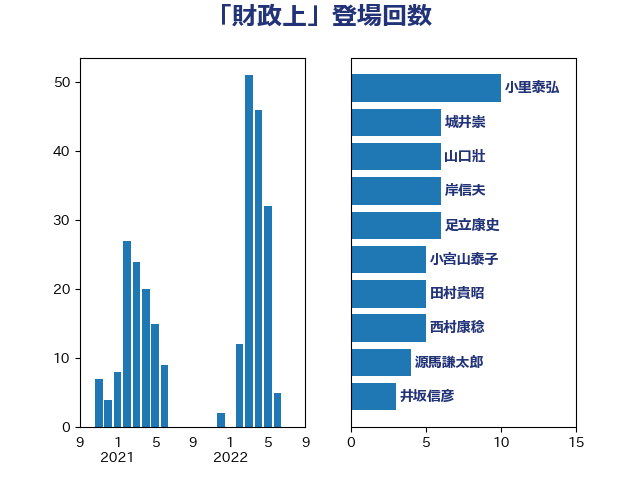

単語「財政上」

| 小里泰弘 | 自由民主党 | 10 回 |
| 城井崇 | 立憲民主党 | 6 回 |
| 山口壯 | 自由民主党 | 6 回 |
| 岸信夫 | 自由民主党 | 6 回 |
| 足立康史 | 日本維新の会 | 6 回 |
| 小宮山泰子 | 立憲民主党 | 5 回 |
| 田村貴昭 | 日本共産党 | 5 回 |
| 西村康稔 | 自由民主党 | 5 回 |
| 源馬謙太郎 | 立憲民主党 | 4 回 |
| 井坂信彦 | 立憲民主党 | 3 回 |
| 勝俣孝明 | 自由民主党 | 3 回 |
| 國重徹 | 公明党 | 3 回 |
| 塩川鉄也 | 日本共産党 | 3 回 |
| 塩村あやか | 立憲民主党 | 3 回 |
| 平木大作 | 公明党 | 3 回 |
| 後藤祐一 | 立憲民主党 | 3 回 |
| 徳永エリ | 立憲民主党 | 3 回 |
| 秋野公造 | 公明党 | 3 回 |
| 西村智奈美 | 立憲民主党 | 3 回 |
| 金子恭之 | 自由民主党 | 3 回 |
| 高鳥修一 | 自由民主党 | 3 回 |
| おおつき紅葉 | 立憲民主党 | 2 回 |
| 中島克仁 | 立憲民主党 | 2 回 |
| 佐々木さやか | 公明党 | 2 回 |
| 加藤勝信 | 自由民主党 | 2 回 |
| 勝部賢志 | 立憲民主党 | 2 回 |
| 小沼巧 | 立憲民主党 | 2 回 |
| 山添拓 | 日本共産党 | 2 回 |
| 岩谷良平 | 日本維新の会 | 2 回 |
| 後藤茂之 | 自由民主党 | 2 回 |
| 新垣邦男 | 立憲民主党 | 2 回 |
| 木原稔 | 自由民主党 | 2 回 |
| 武田良太 | 自由民主党 | 2 回 |
| 田村まみ | 国民民主党 | 2 回 |
| 田村憲久 | 自由民主党 | 2 回 |
| 福島伸享 | 無所属 | 2 回 |
| 紙智子 | 日本共産党 | 2 回 |
| 自見はなこ | 自由民主党 | 2 回 |
| 萩生田光一 | 自由民主党 | 2 回 |
| 西岡秀子 | 国民民主党 | 2 回 |
| 近藤和也 | 立憲民主党 | 2 回 |
| 道下大樹 | 立憲民主党 | 2 回 |
| 里見隆治 | 公明党 | 2 回 |
| 上田清司 | 国民民主党 | 1 回 |
| 中川康洋 | 公明党 | 1 回 |
| 中野洋昌 | 公明党 | 1 回 |
| 伊藤渉 | 公明党 | 1 回 |
| 勝目康 | 自由民主党 | 1 回 |
| 吉田忠智 | 立憲民主党 | 1 回 |
| 堤かなめ | 立憲民主党 | 1 回 |
| 大串博志 | 立憲民主党 | 1 回 |
| 大塚耕平 | 国民民主党 | 1 回 |
| 宮崎雅夫 | 自由民主党 | 1 回 |
| 宮路拓馬 | 自由民主党 | 1 回 |
| 岸真紀子 | 立憲民主党 | 1 回 |
| 平山佐知子 | 無所属 | 1 回 |
| 平林晃 | 公明党 | 1 回 |
| 斉藤鉄夫 | 公明党 | 1 回 |
| 斎藤嘉隆 | 立憲民主党 | 1 回 |
| 本田太郎 | 自由民主党 | 1 回 |
| 柳ヶ瀬裕文 | 日本維新の会 | 1 回 |
| 柴田巧 | 日本維新の会 | 1 回 |
| 森山浩行 | 立憲民主党 | 1 回 |
| 森田俊和 | 立憲民主党 | 1 回 |
| 横沢高徳 | 立憲民主党 | 1 回 |
| 河野義博 | 公明党 | 1 回 |
| 浅田均 | 日本維新の会 | 1 回 |
| 浅野哲 | 国民民主党 | 1 回 |
| 浜口誠 | 国民民主党 | 1 回 |
| 浮島智子 | 公明党 | 1 回 |
| 熊野正士 | 公明党 | 1 回 |
| 牧山ひろえ | 立憲民主党 | 1 回 |
| 猪口邦子 | 自由民主党 | 1 回 |
| 玄葉光一郎 | 立憲民主党 | 1 回 |
| 玉木雄一郎 | 国民民主党 | 1 回 |
| 田村智子 | 日本共産党 | 1 回 |
| 白石洋一 | 立憲民主党 | 1 回 |
| 石井苗子 | 日本維新の会 | 1 回 |
| 石川香織 | 立憲民主党 | 1 回 |
| 福重隆浩 | 公明党 | 1 回 |
| 稲富修二 | 立憲民主党 | 1 回 |
| 芳賀道也 | 国民民主党 | 1 回 |
| 茂木敏充 | 自由民主党 | 1 回 |
| 菅義偉 | 自由民主党 | 1 回 |
| 菊田真紀子 | 立憲民主党 | 1 回 |
| 西銘恒三郎 | 自由民主党 | 1 回 |
| 角田秀穂 | 公明党 | 1 回 |
| 赤嶺政賢 | 日本共産党 | 1 回 |
| 逢坂誠二 | 立憲民主党 | 1 回 |
| 野田国義 | 立憲民主党 | 1 回 |
| 鈴木俊一 | 自由民主党 | 1 回 |
| 鈴木英敬 | 自由民主党 | 1 回 |
| 長浜博行 | 無所属 | 1 回 |
| 関芳弘 | 自由民主党 | 1 回 |
| 青木愛 | 立憲民主党 | 1 回 |
| 馬場伸幸 | 日本維新の会 | 1 回 |
| 高橋光男 | 公明党 | 1 回 |
| 高橋英明 | 日本維新の会 | 1 回 |
| 鳩山二郎 | 自由民主党 | 1 回 |
| 麻生太郎 | 自由民主党 | 1 回 |